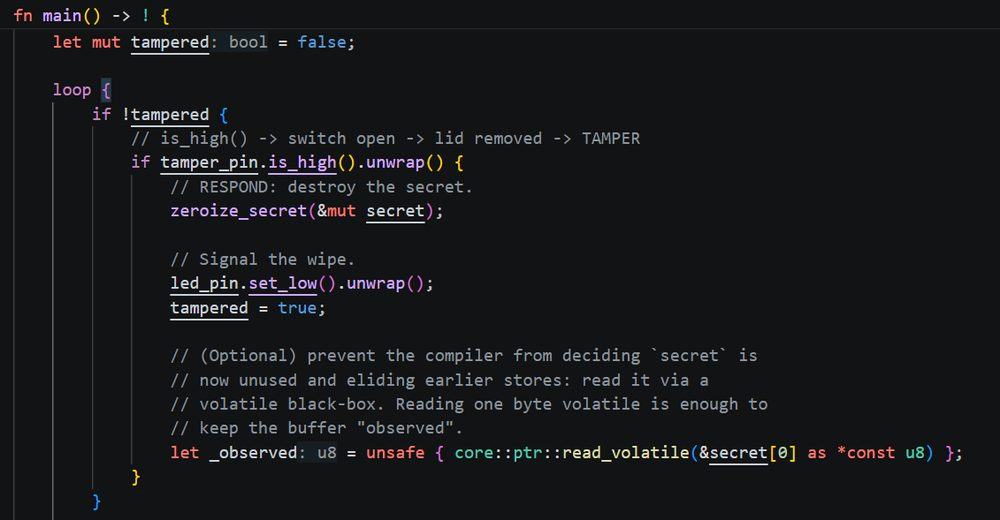
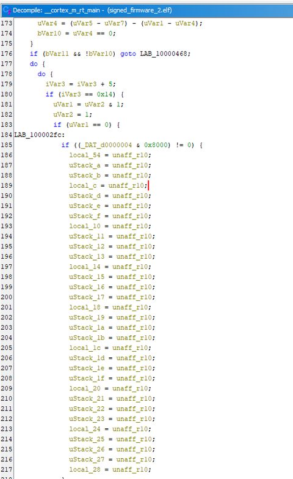
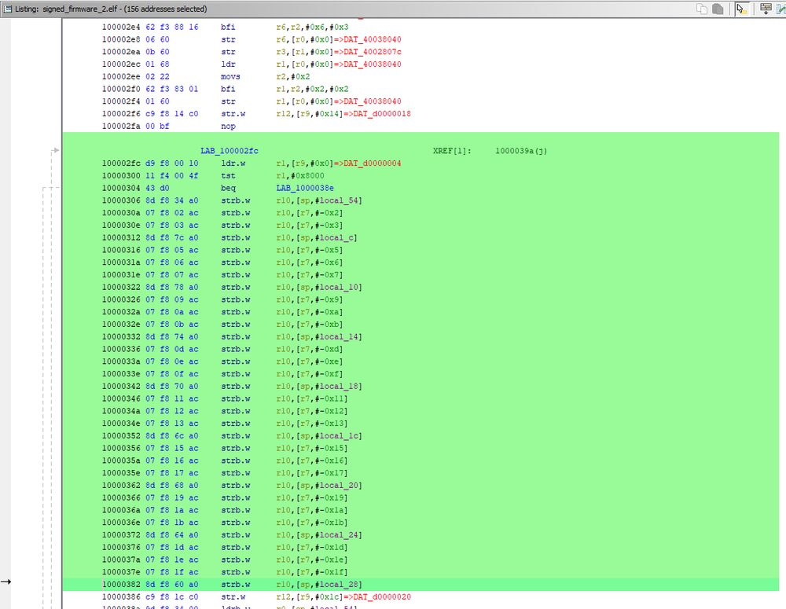
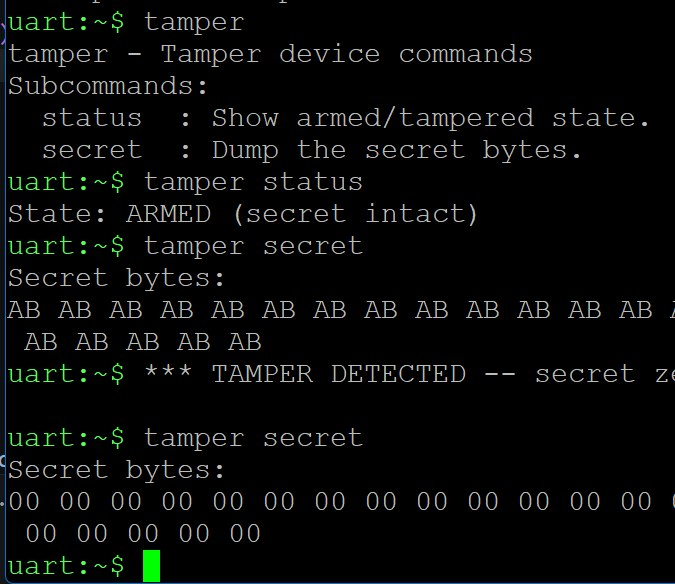
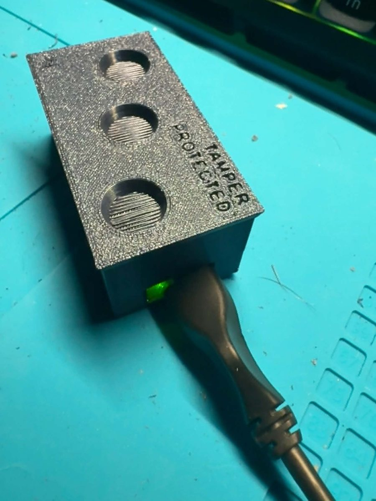
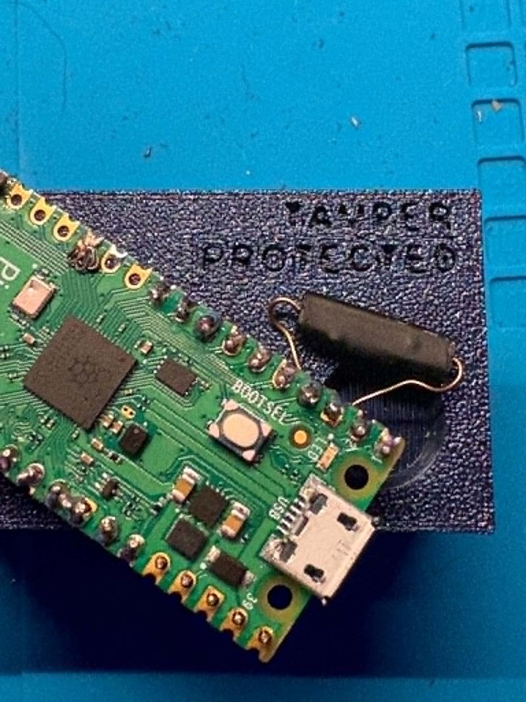

This is a simulation. The buttons below animate a representative run of the real pipeline so you can see how the security gates behave, including how they
fail the build when a vulnerability shows up. The actual pipeline runs on GitHub Actions on every push.
See the real runs here.
Toggle this on to add a crate with a known CVE. The scanners catch it and block the build.
The firmware it protects · tamper response
The pipeline above guards the code. The firmware holds a secret and zeroizes it the moment the enclosure is opened. Detect, respond, zeroize. Open the lid and watch the secret get wiped!
What each gate does
BuildCross-compiles the firmware for the RP2350 (thumbv8m). Baseline: does it compile in a clean environment?
Clippy · SASTStatic analysis of the source itself for insecure and incorrect patterns. Findings fail the build.
Syft · SBOMGenerates a standards-format software bill of materials. It's the inventory the vulnerability scanners check against.
Grype · SCAScans every dependency against CVE databases. High/critical findings block the merge.
Trivy · multiVulnerabilities, exposed secrets, and misconfigurations in one pass. Defense in depth over Grype.
cargo-audit · SCARust-native scan against the RustSec advisory database for crate-specific advisories.
Then I reverse-engineered my own firmware
Signing proves firmware is authentic, but it does not hide anything. So I signed my tamper firmware, opened the signed image in Ghidra, and traced it from the boot vector all the way to my own logic. The goal: confirm at the binary level that the security mitigation I wrote actually survives compilation.

What I wrote. The tamper loop in Rust: read the pin, and on tamper, zeroize the 32-byte secret.

What the compiler produced. Ghidra's decompiler: a GPIO input read, then 32 separate writes of zero.

Down to the instructions. The disassembly: ldr reads the GPIO input register (0xd0000004), tst checks the tamper pin's bit, and then a wall of strb.w r10 stores writes zero into all 32 bytes of the secret, one at a time.
This is the proof the mitigation works. A naive secret = [0; 32] can be deleted by the compiler as a dead store, so the wipe silently never happens. Because I used the zeroize crate, the compiler was forced to emit all 32 volatile stores. You can see every one of them in the shipped binary. The wipe is real, not optimized away. That is the difference between claiming a security control and verifying one.
Signed is not hiddenI read the entire signed image in the clear. Signing protects integrity, not confidentiality. Encryption is the separate mechanism for that.
Optimization flattens structureMy tidy source got inlined and rearranged. You find logic by behavior and constants, not by labels.
Cortex-M is Thumb-onlyDecoding as ARM produced garbage. Selecting the Cortex/Thumb language was the fix, a real ARM RE gotcha.
Verify, don't assumeSeeing the 32 un-optimized stores turned "I wrote a wipe" into "the wipe provably happens on the device."
Then I rebuilt it on an RTOS, in C
The first version was bare-metal Rust with one loop doing everything. To learn how production embedded systems are actually built, I rewrote the whole tamper device on Zephyr RTOS in C. Same behavior, but now as three independent threads scheduled by a real-time kernel, with the hardware described in a devicetree and a live diagnostic shell. Defense embedded work runs on C and mainstream RTOSes, so this was the higher-value way to build it.
Three concurrent threadsA tamper-monitor thread (high priority), a heartbeat LED thread (low priority), and main, all scheduled by the Zephyr kernel instead of one superloop.
Thread synchronizationThe tamper and heartbeat threads share one atomic flag. The monitor publishes "tampered"; the LED thread reacts, going from a calm blink to a frantic one.
Devicetree hardware descriptionThe reed-switch input is declared in a devicetree overlay, not hardcoded, the portable way Zephyr separates hardware from application code.
Custom diagnostic shellA tamper command over USB serial reports armed/tampered state and dumps the secret bytes, so the wipe can be proven live on the running device.

The wipe, proven live. Over the shell: read the secret (AB AB AB…), pull the magnet, read again (00 00 00…). The same result I verified statically in Ghidra, now confirmed interactively on the running device.
Then I gave it a body
A tamper sensor is only real if opening the box triggers it. I designed an enclosure from scratch in FreeCAD and printed it. A magnet sits in the lid, directly over a reed switch soldered to the board. With the lid on, the magnet holds the switch closed and the device is armed. Lift the lid and the magnet moves away, the switch opens, and the firmware zeroizes the secret. The tamper response is now a physical act.

Lid on: armed. The magnet in the lid holds the reed switch closed. Embossed on top, in case anyone was wondering.

Lid off: wiped. The reed switch, soldered straight to the board, sits under where the lid magnet lands. Remove the lid and the secret is gone.
Two firmwares, one device, from silicon to enclosure. The same tamper-response system, built two ways: bare-metal Rust for full control of the metal, and multi-threaded Zephyr/C for the way real embedded systems are structured. Signed firmware, verified at the binary level, detecting a physical intrusion, wiping a secret, in a case I designed and printed. That is the whole stack, end to end.
Mr. Pickles My supervisor ensuring quality work